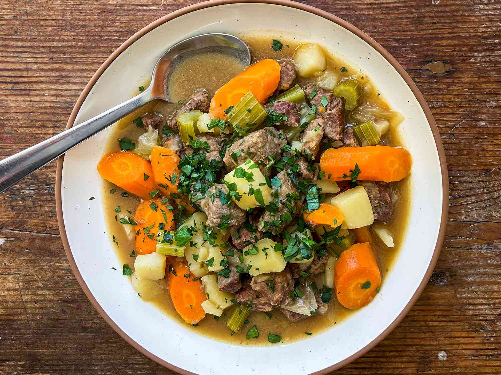

Home
Beef Stew

Beef stew starts with searing chunks of beef until they develop a deep, caramelized crust.
Onions, garlic, and herbs are added to the pot, releasing their fragrance as they soften.
Carrots, potatoes, and other hearty vegetables join in,
soaking up the flavors as everything simmers slowly in a rich broth.
Over time, the sauce thickens, the beef turns tender enough to fall apart with a spoon,
and the kitchen fills with warmth. A bowl of beef stew is comfort in its purest form,
perfect for cold evenings or when you want a meal that feels like home.
Ingredients
- 3 tablespoons vegetable oil
- 2 pounds cubed beef stew meat
- 4 cubes beef bouillon, crumbled
- 4 cups water
- 1 teaspoon dried rosemary
- 1 teaspoon dried parsley
- 1/2 teaspoon ground black pepper
- 3 large potatoes, peeled and cubed
- 4 carrots, cut into 1 inch pieces
- 4 stalks celery, cut into 1 inch pieces
- 1 large onion, chopped
- 2 teaspoons cornstarch
- 2 teaspoons cold water
Directions
- Heat oil in a large pot or Dutch oven over medium-high heat; add beef and cook until well browned.
- Dissolve bouillon in 4 cups water and pour into the pot; stir in rosemary, parsley, and pepper.
Bring to a boil; reduce heat to low, cover, and simmer for 1 hour. Stir in potatoes, carrots, celery,
and onion.
- Dissolve cornstarch in 2 teaspoons of cold water; stir into stew.
Cover and simmer until beef is tender, about 1 hour.
Home